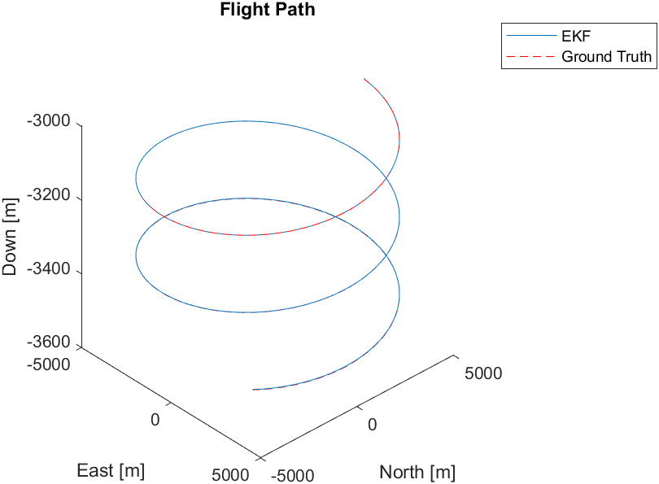

Pictured: An arm with a propeller on it that I designed my first PID controller for.
Guidance, Navigation, and Control, often times abbreviated as GNC, is a discipline within aerospace engineering that involves predicting and controlling vehicle dynamics. Guidance involves determining the desired behavior, typically picking your flight path. Navigation is the determination of the current state of the vehicle. Lastly, control involves determining what actions the vehicle needs to take given its current state to follow the desired flight path. Modern GNC algorithms often rely on computational math and are often simulated in scientific computing languages like Python and MATLAB. They are often implemented on embedded systems to control vehicles enabling things like autopilot and fly-by-wire.
As my favorite discipline within aerospace engineering, I've taken a number of courses in this subject. Most notably, the course Guidance, Navigation, and Communication as well as Spacecraft Dynamics and Control. By the end of this school year, I will have completed my last undergraduate course in the subject, Aircraft Dynamics and Control, and some graduate courses like Optimal Control and Applied Machine Learning.
More often then not, the motion of dynamical systems like spacecraft cannot be described with simple functions. Typically, these systems are modeled using systems of differential equations that, in many situations, are non-linear. These are impossible to solve with algebra and require the use of numerical solvers. Throughout many of my courses, I've built dynamical simulators to model systems from differential drive robots to rockets. I've used a variety of tools for this such as MATLAB's built in ODE solvers as well as algorithms I've implemented myself like RK4 and RKF45.
One of the primary challenges of navigation is that real sensors don't produce perfect data. There is always some noise that, if not accounted for, can throw control algorithms way off. Much of my experience working with navigation has been in my GNC course, primarily designing Kalman filters. The Kalman filter is a state estimation algorithm that fuses multiple noisy sensor readings and a mathematical model of the system and was first implemented on the Apollo Guidance Computer. There are other variants of the filter that address different types of systems such as the extended Kalman filter (EKF) which is used for nonlinear dynamical systems that the regular Kalman filter doesn't work on. Over the course of my GNC class, I implemented various kalman filters in MATLAB ranging from simple ones for estimating the state of a particle moving in one dimension to an EKF to estimate the flight path of an airplane in 3D space using WGS84.
A graph showing the results of an extended Kalman filter I implemented for an aircraft. While both the real flight path (the ground truth) and the path estimated by the EKF are graphed, they appear as one because of just how accurate the EKF's estimates are.